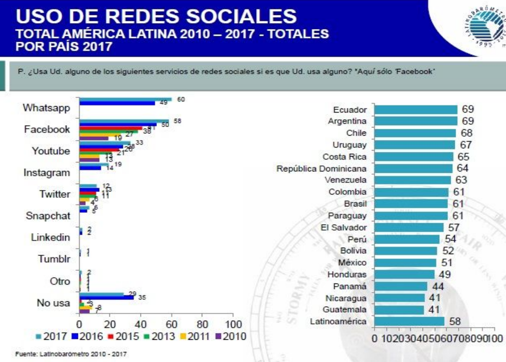

Abstract
El presente trabajo tiene como objetivo determinar la vulnerabilidad
de los datos personales en aplicaciones o programas que se pueden
encontrar en Internet. Muchas aplicaciones requieren de datos
personales para su uso. En algunos casos, estas aplicaciones no
están exentas de fallos y son vulnerables a ser hackeadas, lo cual
pone en riesgo los datos personales de los usuarios involucrando
información íntima tal como el acceso a cuentas bancarias, correos,
contactos, etc. Entre los métodos que se utilizan para evitar esta
pérdida de datos se encuentran: evitar publicar información
personal, utilizar contraseñas seguras, reportar problemas, entre
otros. En conclusión, las Redes Sociales son indispensables para la
mayoría de las personas debido a que presentan ventajas tales como
la comunicación a larga distancia, el intercambio de ideas, el
entretenimiento, la búsqueda de información, entre otros. Sin
embargo, también presentan desventajas importantes como por ejemplo
la necesidad de exponer información personal para su uso y la
posible pérdida de información de los usuarios por parte de
cibercriminales.
Introducción
A lo largo de la historia, el hombre necesitó implementar recursos
para poder comunicarse con otros individuos, algo esencial para
poder intercambiar ideas, complementarse y solucionar sus problemas
de manera colectiva [1]. La comunicación a larga distancia es una
necesidad, y los avances tecnológicos implementan medidas para
satisfacerla. Una de estas medidas es Internet, a partir de la cual
surgieron nuevas formas de comunicación. Sin embargo, para la
comunicación a larga distancia hacen falta programas o aplicaciones
que permitan a los individuos establecer diferentes tipos de
conexiones con otros usuarios [2]. Estos programas y aplicaciones
conforman las Redes Sociales, las cuales diariamente obligan al
usuario a resguardar y confiar su información personal para hacer
posible su uso, existiendo así el riesgo de la venta de la identidad
e información personal de millones de personas [3]. En este contexto
el presente trabajo (en el marco de la cátedra de Sistemas y
Organizaciones, año 2018), es determinar la vulnerabilidad de los
datos personales de los usuarios dentro de las diferentes Redes
Sociales en Internet. Para cumplir con el objetivo, el trabajo se
estructura de la siguiente manera: en la sección 1, se analizan las
aplicaciones que requieren permisos por parte de los usuarios para
acceder a ciertas funciones de su dispositivo afectando su
privacidad; en la sección 2, se comparan los números de usuarios
hackeados en cada año; en la sección 3, se determinan métodos, cuya
utilización por parte de los desarrolladores o de cibercriminales,
afectan a la privacidad y la pérdida de información de los
usuarios.; en la sección 4, se listan las consecuencias de pérdida o
venta de información sobre los usuarios; en la sección 5, se
mencionan las posibles prevenciones o consejos para resguardar los
datos confidenciales de cada usuario. Finalmente, en la sección 6 se
detallan las conclusiones y futuras líneas de trabajo.
Efecto de las aplicaciones en la privacidad de los usuarios
Cada día son más las aplicaciones que, en mayor medida, obligan a
los usuarios a acceder a determinadas funciones de sus dispositivos,
como pueden ser la cámara, ubicación, contactos, micrófono, entre
otras [4]. Esto genera ciertas ventajas, entre ellas mejorar la
experiencia del usuario en el uso de la aplicación, permitir que los
desarrolladores perfeccionen ciertos aspectos de la misma, y además,
muchos de estos accesos son lógicos e imprescindibles (una
aplicación de fotos debe tener acceso a la galería, una de llamadas
a los contactos) [5]. Sin embargo, el problema se encuentra cuando
las aplicaciones piden permisos para poder evadir la privacidad y
utilizar datos de los usuarios, las desventajas que pueden generar
estos accesos pueden ser contundentes. La privacidad involucra
información personal del usuario, datos íntimos e importantes de
cada persona como puede ser la galería de fotos o datos bancarios
[6]. Un claro ejemplo es una aplicación denominada True Caller, la
cual sirve para detectar llamadas de números desconocidos y después
poder bloquearlos [7]. Si bien esta aplicación tiene buenas
calificaciones por parte de los usuarios en Play Store (4,5
estrellas y más de 100 millones de descargs), al solicitar el
permiso y el número de celular del usuario, es capaz de extraer
datos cómo, con quién habla, por cuánto tiempo o, los números que
marca a diario, para luego mandárselo a terceros [8]. En la
aplicación de Facebook también se pueden encontrar claros ejemplos
de acceso a información personal. En algunas publicaciones aparecen
páginas que intentan llamar la atención con títulos como: “¿A qué
famoso te pareces?” “Descubrí quién fuiste en tu vida pasada”. Estas
páginas aparentan ser inofensivas, pero la realidad es que al
intentar abrirlas, te piden accesos a contactos, correo electrónico,
fotos, lista de amigos, entre otros [9].
En la figura 1, se muestra una imagen de los requisitos que se
solicitan frecuentemente para el uso de aplicaciones
Figura 1. Imagen representativa de permisos que solicitan
publicaciones en Facebook [10].

Según Panda Security (empresa española especializada en ofrecer
servicios de seguridad informática), el principal motivo de acceso a
los datos es para fines publicitarios [11]. Por ejemplo, a través de
la ubicación los desarrolladores pueden enviar publicidad acorde al
país en que se encuentre el usuario. Sin embargo, muchas de las
aplicaciones conocidas mundialmente como WhatsApp [12], Facebook
[13], Instagram [14], Messenger [15], solicitan estos permisos y
tienen la posibilidad de utilizar o vender información si ellos se
lo disponen. El problema puede ser de gravedad si la aplicación
tiene intenciones malignas, puede instalar un malware a través de
estos permisos y robar datos bancarios. Además, mediante los
permisos a mensajes de texto, una aplicación puede leer y escribir
en el nombre del usuario y suscribirlo a un servicio de mensajería,
la cual podría enviar mensajes de pago sin su consentimiento.
Es recomendable leer y verificar los permisos que se están
solicitando y preguntarse si realmente son o no necesarios. [16]
En la figura 2, se puede observar otro ejemplo de los permisos que
pueden terminar siendo un grave problema para el usuario
Figura 2. Permisos a mensajes de texto, llamadas y contactos por
parte de una aplicación [17].

Informe y gráficos de usuarios hackeados
A menudo, las Redes Sociales presentan fallos de seguridad, como por
ejemplo Instagram, aplicación la cual debido a sus fallas, gastó más
de 4 millones en recompensas a aquellas personas que lograron
avisarle acerca de estos fallos a la plataforma [18]. Los usuarios
que utilizan estas Redes Sociales, pueden ser perjudicados tanto
personal como financieramente [19].
En el año 2016 un virus llamado “Botnet” infectó peligrosamente a
una de las Redes Sociales más utilizadas; Facebook, en el cual, se
produjo una caída del sistema y dejó inoperantes a sus usuarios.
Este virus informático infectó a servidores y ordenadores por igual,
actuó de forma remota y autónoma [20].
En Agosto de 2017 el número de usuarios hackeados en Redes Sociales
alcanzó la enorme cifra de 3.000 millones de usuarios. (Teniendo en
cuenta que la población mundial es de 7.500 millones de personas)
[21].
En 2018 se han producido enormes fallos de seguridad en estas Redes
Sociales, un ejemplo de éstas es Twitter. Esta empresa tuvo un fallo
técnico y se vió obligada a anunciar el cambio de contraseñas a sus
330 millones de usuarios [22].
En la figura 3, se muestra la cantidad de usuarios que utilizan los
diferentes tipos de Redes Sociales y los países que más las
utilizan: [23]
Figura 3. Estadística del uso de Redes Sociales en América Látina
[24]

Esta encuesta realizada en el año 2017, muestra una estadística del
uso de de Redes Sociales en la región de América Latina. El uso de
Whatsapp, Facebook y Youtube se encuentran en los primeros lugares,
demostrando de esta manera, la importancia de la comunicación para
las personas.
Métodos de obtención de información por parte de los desarrolladores
Tanto los desarrolladores como los cibercriminales se encuentran en
una constante carrera para desarrollar métodos que permitan superar
las herramientas del otro. Es por esto que sus metodologías
evolucionan para afrontar los nuevos desafíos que se presenten.
Tanto los desarrolladores como los cibercriminales se encuentran en
una constante carrera para desarrollar métodos que permitan superar
las herramientas del otro. Es por esto que sus metodologías
evolucionan para afrontar los nuevos desafíos que se presenten.
Algunos de los métodos que emplean los
desarrolladores en la actualidad para
proteger al usuario son las medidas que
toma Android en sus aplicaciones. Antes de
ser descargadas informan al usuario de una
lista de permisos que solicita la aplicación,
permitiendo al usuario cancelar la descarga
si considera que pide accesos excesivos o
resulta sospechosa [25]. Por ejemplo, una
aplicación que pida acceso a información
del dispositivo como número de teléfono o
contactos cuando no hay una necesidad
clara para que requiera esos datos. Android
también provee herramientas que buscan
hacer a las aplicaciones y al sistema más
seguro, por ejemplo el archivo strings.xlm,
que puede ser utilizado por el desarrollador
para evitar la fuga de información mediante
herramientas de ingeniería inversa o
análisis forense de la memoria RAM [26].
Igualmente los cibercriminales emplean
diversos métodos para robar información,
uno de los más famosos es el ransomware.
Este es un tipo de virus que encripta datos
con una clave generada en el dispositivo, y
a su vez encripta la clave con una clave
global, a la que solo el creador tiene acceso.
El virus entonces presenta una forma de
contactar al creador y éste pide un pago
para desencriptar la clave, esencialmente un
secuestro virtual de datos [27].
Consecuencias por pérdida o robo de datos de los usuarios
Las aplicaciones tienen acceso a una gran
cantidad de información personal del
usuario como pueden ser su número de
teléfono, cuentas de correo electrónico,
cuentas bancarias, huella dactilar,
ubicación, entre otros [28]. Esto conlleva a
que en el caso existir una brecha de
seguridad, toda esa información pueda ser
robada; lo cual produciría consecuencias en
diferentes casos:
- Cuentas bancarias, puede llevar a la
pérdida de capital por parte del
usuario.
- Correos electrónicos, puede llevar a
la sustracción de información como
pueden ser cuentas asociadas a ese
correo electrónico, información
personal, información sensible y
posible suplantación de identidad.
- Cuentas de aplicaciones, ya sean
Redes Sociales u otras.
- Archivos alojados en el dispositivo,
fotos o videos personales,
documentos de trabajo.
- Contactos, y con ello información
de las personas relacionadas al
usuario.
- Ubicación, donde está el usuario e
incluso su comportamiento (a donde
va y a qué horas lo hace).
Consejos para resguardar los datos
confidenciales de cada usuario
Existen ciertas prevenciones para
resguardar y al mismo tiempo proteger los
datos del usuario, algunas de éstas son [29]:
- No publicar información personal
(Nombre completo,
domicilio,número de teléfono);
- No permitir que aplicaciones o
anuncios tengan acceso a la
información personal;
- Si el usuario es menor de edad, se
recomienda consultar a sus
responsables antes de aceptar el
acceso a la información personal
por parte de programas externos;
- Utilizar contraseñas seguras,
mientras más caracteres, letras y
mayúsculas mejor;
- Reportar cualquier tipo de problema
que se presente;
- Ante una compra verificar que se
encuentre el candado de seguridad,
este comprueba una segura
comunicación entre el navegador
(usuario) y el sitio Web;
- Verificar que el sitio web presenta
el certificado de identidad o sello de
confianza;
- Siempre utilizar el Antivirus para
disminuir el riesgo de pérdida de
información;
- Borrar las cookies (información que
guarda el navegador sobre uso
previo del mismo) todos los días, estas contienen información
personal;
- Leer las políticas de privacidad,
permite saber a quienes se le dará
acceso a información del usuario;
- Verificar que la dirección del sitio
Web empiece con https siendo así
un sitio seguro;
Resultados
En el presente trabajo, los resultados
demuestran la gran cantidad de gente que
sufre ataques por parte de los
cibercriminales, los riesgos, pérdidas y la
manera en que los mismos se pueden
prevenir. Cifras que alcanzan los cientos de
millones de usuarios hackeados indican la
tangible necesidad de estar informado
frente a las maneras en las que se puede
proteger la información. Los métodos más
comunes y efectivos se encuentran
adecuadamente descriptos, por lo tanto, el
usuario debería ser capaz de reducir las
probabilidades de la evasión de su
información a futuro a más de la mitad, en
caso de no haberlas conocido previamente.
Por otra parte, el análisis del uso de
aplicaciones y Redes Sociales demuestran
la cantidad de gente que se involucra a las
mismas, generando un impulso en otras
personas a tener que involucrarse en estas
Redes para mejorar la comunicación y estar
al tanto de lo que sucede día a día, lo cual
termina produciendo una cadena de gente
que tiende a compartir su información con
frecuencia mediante los accesos permitidos.
De esta manera, aumenta la cantidad de
personas afectadas por la pérdida de
información. Se denota sin embargo la
necesidad de revisar y actualizar la
metodología efectuada de manera anual,
debido a la velocidad exponencial con la
que el campo de la tecnología digital
avanza.
Conclusión
A través de la investigación, se puede
observar que los usuarios deben tener
presentes las consecuencias del uso de las
Redes Sociales. De hecho, todo indica que
día a día los riesgos aumentan. La gente,
por su parte, agrega datos personales
importantes, cuya utilización puede ser
gratificante para los cibercriminales. Es
decir, la información detallada en este
documento revela que el número de
usuarios hackeados a lo largo del tiempo, y
por lo tanto la posibilidad de que ocurra un
hackeo en el presente, es significativa.
Teniendo en cuenta que la cantidad de
gente que se involucra al uso de Redes
Sociales también aumenta de manera
amena.
Como futuras líneas de trabajo se prevé
realizar un estudio con respecto al número
de usuarios afectados por la pérdida de
datos y la cantidad de gente que utiliza las
Redes Sociales. Por otro lado, se pretende
analizar cuáles son las medidas de
seguridad que utiliza cada empresa para
proteger a sus usuarios e informar la
factibilidad de cada uno de los métodos de
prevención.
Referencias
[1] Williams, R. Historia de la comunicación, vol. 1:
Del lenguaje a la escritura. Barcelona: Editorial
Icaria. Amparo Moreno Universidad Autónoma de
Barcelona, 1922. ISBN 9788476762196.
[2] Cornejo, Marqueza, Tapia, María Lourdes,
Redes sociales y relaciones interpersonales en
internet. Fundamentos en Humanidades [en línea]
2011, XII (Sin mes).ISSN 1515-4467.
[3] Lomborg, Stine; Bechmann, Anja. Using APIs
for data collection on social media. The Information
Society, 2014, vol. 30, no 4, p. 256-265
[5] Luis Ortega; Application Permissons. Posted on
21.01.2018.
[6] Juan Antonio Pascual. Los permisos de las Apps
te roban y espían. ComputerHoy, 2015. [fecha de
consulta: 5 agosto 2018]. Displnible en:
http://bit.ly/2Cy1wG6
[7] Sitio Web True Caller: http://bit.ly/2N0rUxn
[8] Natalia de la Peña Frade. Configura los permisos
de Apps en Android [en línea]. Enclaveproductiva,
2015.[fecha de consulta: 5 agosto 2018].Disponible
en: http://bit.ly/2Qgk7Jw
[9] Karl Thomas. Permisos de aplicaciones que
debes tener cuidado [en línea]. Welivesecurity,2015.
[fecha de consulta: 5 agosto 2018]. Disponible en:
http://bit.ly/2MfJSXs
[10] Imagen; http://bit.ly/2oUNAwq
[11] Panda Security S.L[en línea] [fecha de
consulta: 20 agosto 2018]. Disponible en:
http://bit.ly/2O2jhyL
[12]Whatsapp Web [en línea][fecha de consulta: 20
agosto 2018].Disponible en:http://bit.ly/2wS0jnV
[13] Facebook [en línea][fecha de consulta: 20
agosto 2018]. Disponible en:http://bit.ly/2CBNAuF
[14] Instagram [en línea][fecha de consulta: 20
agosto 2018]. Disponible en:http://bit.ly/2wYG1cj
[15] Messenger [en línea][fecha de consulta: 20
agosto 2018]. Disponible en:http://bit.ly/2NYcNAO
[16] Manuel Fernández. El Español, 2018 5
Consejos para proteger tu móvil de aplicaciones
peligrosas[en línea][fecha de consulta: 12 agosto
2018].
[17] Rubén Andrés. Computerhoy, 2014. Controla
los permisos y acceso de tus aplicaciones Android.
[en línea][fecha de consulta: 12 agosto 2018].
[18] C. Otto. La sexta, Tecnoxplora, 2018. El
negocio de hackear redes sociales [en línea][fecha
de consulta: 14 de junio 2018].
[19] Jylian Russell. Hootsuite, 2017. 5 riesgos de
seguridad en redes sociales y cómo evitarlos[en
línea][fecha de consulta: 2 de julio 2018].
[20] David Sarabia. Eldiario.es, 2016. El año que
nos hackearon peligrosamente. [en línea]. [fecha de
consulta: 13 de junio 2018].
[21] El Sol, 2018. Fallo de Seguridad: Twitter pidió
a sus usuarios cambiar la clave. [en línea][fecha de
consulta: 3 de julio 2018].
[22] Observatorios de Medios UCA: Uso de Redes
Sociales. [en línea]. 2017, octubre, 28 [fecha de
consulta: 4 de julio de 2108].
[23]Pimienta García, Rodrigo, Aguilar Torres,
Gualberto, Ramírez Flores, Manuel, Gallegos
García, Gina. Métodos de programación segura en
Java para aplicaciones móviles en Android.
CIENCIA ergo-sum, Revista Científica
Multidisciplinaria de Prospectiva. Noviembre 2014,
Vol. 21-3 pp. 243-248. ISSN:1405-0269
[24] Guadalupe Moreno.Stadista, 2017. Los usuarios
de redes sociales se acercan al total de la población
mundial[en línea][fecha de consulta: 20 agosto
2018].
[25] Michael Nuncic. Ontrac, 2017. ¿Nos roban los
datos las aplicaicones moviles? [en línea][fecha de
consulta: 20 agosto 2018] .
[26] Narinder Pruba. Welivesecurity, 2016. Los
cibercriminales se apoyan cada vez mas en el
ransomware[en línea][fecha de consulta: 23 agosto
2018].
[27]Thomas J. Holt, Olga Smirnova & Yi Ting Chua
(2016) Exploring and Estimating the Revenues and
Profits of Participants in Stolen Data Markets,
Deviant Behavior, 37:4, 353-367, DOI:
10.1080/01639625.2015.1026766
[28]Diario El Universal, 2015.¿Cómo protegerse de
los delitos informáticos?[en línea][fecha de consulta:
12 de junio 2018].
[29]Santillan Arenas, Javier Ulises;Becerril Lopez,
Sergio Andrés. Fraude Electrónico[en línea].
2009.[fecha de consulta: 12 de junio 2018].
[30]Young, Adam y Yung, Moti. Privacy and
Security Cryptovirology: The Birth, Neglect, and
Explosion of Ransomware. Communications of the
ACM. Julio 2017, volumen 60 n. 7, pp. 24-26.
DOI:10.1145/309734